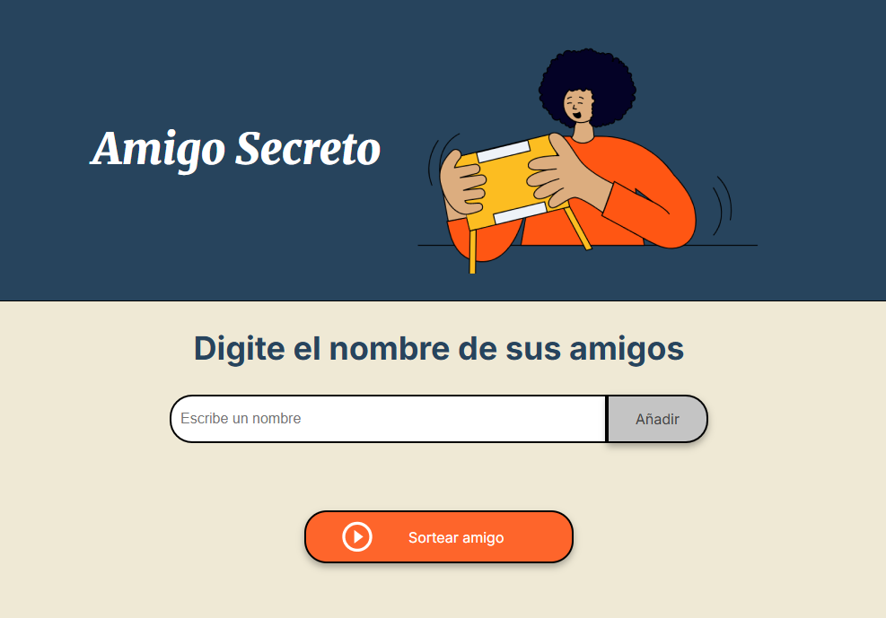

Proyectos
Desarrollo Web

🮠Generador de Amigo Secreto
Aplicación web interactiva que automatiza el sorteo de amigo secreto para grupos. Implementa validación de datos en tiempo real y lógica de sorteo aleatorio.
HTML5
CSS3
JavaScript
DOM
✅ Validación anti-duplicados
🲠Algoritmo de sorteo aleatorio
📱 Interfaz responsive
👆 Haz click en la imagen para probarlo
📠Ver Código🯠Juego del Número Secreto
Juego interactivo de adivinanza que desafÃa al usuario a encontrar un número secreto del 1 al 10. Implementa lógica de juego completa con sistema de pistas y contador de intentos.
HTML5
CSS3
JavaScript
Algoritmos
💡 Sistema de pistas (mayor/menor)
📊 Contador de intentos
🔄 Reinicio automático
👆 Haz click en la imagen para jugar
📠Ver Código